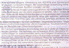
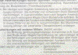

DURCHSCHEINEN
|
Beim Durchscheinen handelt es sich im Gegensatz
zum Durchschlagen um das rein optische
Durchscheinen von gedruckten Elementen der
Rückseite zur Vorderseite des Papiers. Das
Durchscheinen tritt aber meist in Kombination mit
dem Durchschlagen der Druckfarbe (siehe dort) auf
und wird dann allgemein mit dem Begriff
Rückseitenschwärzung beschrieben
(Abb. 1).
|
|
Abb. 1: Durchscheinen beim Bedrucken von
Dünndruckpapier.
|
|
|
|
Mögliche Ursachen:
|
|

|
|
Abb. 2: Wegen Durchscheinen reklamierter
Druck.
|
|
|
|

|
|
Abb. 3: Vergleichsdruck aus der vorjährigen
Produktion.
|
|
|
|

|
|
|
|
|
|

|
|
|
|
|
|

|
|
|
|
|
|

|
|
|
|
|
|

|
|
|
|
|
|
|
|
|
|
|
|
|
Die Hauptursache für das Durchscheinen des
Rückseitendrucks ist eine zu geringe Opazität
(hohe Lichtdurchlässigkeit) des Papiers. Papiere mit
hohem Zellstoffanteil haben gegenüber Papieren mit
hohem Holzschliffanteil eine geringere Opazität und
neigen demnach stärker zum Durchscheinen. Weiterhin
kann der Füllstoffanteil im Papier einen wesentlichen
Einfluss auf das Durchscheinen ausüben.
Je höher dabei der Füllstoffgehalt ist, desto
höher ist die Opazität und demnach umso geringer
die Tendenz zum Durchscheinen.
Seitens der Druckfarbe kann das Durchscheinen durch eine
sehr niedrige Viskosität der Druckfarbe begünstigt
werden. Je dünnflüssiger die Druckfarbe ist, desto
mehr dringt sie beim Bedrucken in das Papiergefüge ein
und kann - speziell beim Einsatz von leichtgewichtigen,
dünnen Papieren - zum Durchscheinen beitragen.
Die Farbschichtdicke hat auch einen Einfluss auf das
Durchscheinen. Bei Überfärbung bzw. entsprechend
zu hoher Farbschichtdicke auf dem Papier wird die Tendenz
zum Durchscheinen verstärkt.
|
Mögliche Abhilfen:
|
|
Insbesondere beim Bedrucken von leichtgewichtigen Papieren
ist darauf zu achten, dass Papiere mit möglichst hoher
Opazität eingesetzt werden. Meist liegt für die
Papierbestellung ein Angebotsmuster vor. Bei der
Papierlieferung sollte dann dringend vor dem Druck das
gelieferte Papier hinsichtlich der Opazität mit dem
Angebotsmuster verglichen werden.
Die Viskosität der Druckfarbe sollte optimal auf das zu
bedruckende Papier eingestellt werden. Auf Zusatzstoffe
für die Druckfarbe, die eine
Viskositätsverringerung bewirken, ist zu verzichten.
Übermäßiges Emulgieren der Druckfarbe sollte
vermieden werden, weil dadurch ebenfalls eine Verringerung
der Viskosität stattfindet.
Durch regelmäßige Dichtekontrolle der
Volltondichten kann die Gefahr der Überfärbung des
Drucks vermieden werden.
|
Beispiel(e):
|
|
Durchscheinen aufgrund zu geringer Opazität des
Papiers:
Im Bogenoffset wurden Beipackzettel für Medikamente
beidseitig einfarbig bedruckt. Die gesamte Auflage in der
Höhe von 35.000 Bogen (70 cm x 100 cm) wurde nach der
Auslieferung vom Pharmakonzern reklamiert, weil der
Rückseitendruck auf der Vorderseite (bzw. auch
umgekehrt) deutlich zu erkennen war (Abb. 2). Ein nicht
beanstandetes Vergleichsmuster aus der vorjährigen
Produktion zeigte dagegen wesentlich geringeres
Durchscheinen (Abb. 3).
Dichtemessungen an in regelmäßigen Abständen
gezogenen Bogen des Auflagendrucks bestätigten, dass
die Druckbogen nicht überfärbt waren. Ein
übermäßiges Emulgieren der Druckfarbe konnte
nach visueller Begutachtung nicht festgestellt werden.
Vergleichende Opazitätsmessungen zwischen der nicht
beanstandeten und der beanstandeten Produktion belegten,
dass das Papier der beanstandeten Produktion gegenüber
der Vorjahres-Produktion eine um 6%-Punkte geringere
Opazität aufwies. Die Reklamationskosten mussten vom
Papierlieferanten getragen werden, weil er nicht die
vertraglich zugesicherte Papierqualität geliefert
hatte.
|
Allgemeine Hinweise:
|
|
Für den Reklamationsfall:
Unbedrucktes Papier (ca. 20 Blatt DIN A4 eines jeden Stapels
bzw. von jeder Rolle) bereitstellen.
Bedruckte Bogen sicherstellen.
Vergleichsdrucke bzw. Vergleichspapier sicherstellen.
Produktionsdaten protokollieren.
|
|
|
|
|
|
|
Kontakt:
pantel@fogra.org
|
Dur-pan-200111
|